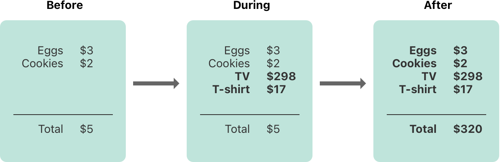

Memory Safety¶ メモリ安全¶
By default, Swift prevents unsafe behavior from happening in your code. For example, Swift ensures that variables are initialized before they’re used, memory isn’t accessed after it’s been deallocated, and array indices are checked for out-of-bounds errors. 初期状態では、スウィフトはあなたのコードにおける偶発事由来の安全でない挙動を防止します。例えば、変数はそれらが使用される前に初期化されること、メモリはそれがデアロケートされてしまった後にアクセスされないこと、そして配列インデックスは境界外エラーを調べられることを、スウィフトは確実にします。
Swift also makes sure that multiple accesses to the same area of memory don’t conflict, by requiring code that modifies a location in memory to have exclusive access to that memory. Because Swift manages memory automatically, most of the time you don’t have to think about accessing memory at all. However, it’s important to understand where potential conflicts can occur, so you can avoid writing code that has conflicting access to memory. If your code does contain conflicts, you’ll get a compile-time or runtime error. スウィフトはまた、同じメモリ領域に対する複数のアクセスが衝突しないことを、メモリ中の位置を修正するコードにそのメモリに対する排他的アクセスを持つよう要求することによって確保します。スウィフトはメモリを自動的に管理することから、ほとんどの場合あなたはメモリアクセスについて考える必要は全くありません。しかしながら、潜在的に衝突が起こり得るところを理解するのは重要です、そうすることであなたはメモリへのアクセスが衝突するコードを書くのを防止できます。あなたのコードが衝突を含むならば、あなたはコンパイル時または実行時エラーを得るでしょう。
Understanding Conflicting Access to Memory¶ メモリへのアクセスの衝突を理解する¶
Access to memory happens in your code when you do things like set the value of a variable or pass an argument to a function. For example, the following code contains both a read access and a write access: メモリへのアクセスは、あなたが変数の値を設定するまたは関数に引数を渡すといったような事を行う時にあなたのコードで起こります。例えば、以下のコードは読み出しアクセスと書き込みアクセスの両方を含みます：
- // A write access to the memory where one is stored.（oneが格納されるところのメモリに対する書き込みアクセス。）
- var one = 1
- // A read access from the memory where one is stored.（oneが格納されるところのメモリから読み出しアクセス。）
- print("We're number \(one)!")
A conflicting access to memory can occur when different parts of your code are trying to access the same location in memory at the same time. Multiple accesses to a location in memory at the same time can produce unpredictable or inconsistent behavior. In Swift, there are ways to modify a value that span several lines of code, making it possible to attempt to access a value in the middle of its own modification. メモリアクセスの衝突は、あなたのコードの異なる部分がメモリの同じ位置に同じ時にアクセスしようとする場合に生じます。メモリの同じ位置への同時での複数のアクセスは、予期されないまたは一貫性のない挙動を生じ得ます。スウィフトには、複数コード行にまたがるある値を修正する方法があります、それが可能にするのはある値に対してそれ自身の修正の途中でアクセスを試みることです。
You can see a similar problem by thinking about how you update a budget that’s written on a piece of paper. Updating the budget is a two-step process: First you add the items’ names and prices, and then you change the total amount to reflect the items currently on the list. Before and after the update, you can read any information from the budget and get a correct answer, as shown in the figure below. あなたは、一片の紙に書かれる予算案を更新する方法について考えることによって、同種の問題を調べられます。予算案の更新は２段階の処理です：最初にあなたはその項目の名前と値段を加えます、それからあなたは総支出額を変更してそれら項目の現在をリスト上に反映します。更新の前後で、あなたはあらゆる情報を予算案から読み出して正しい答えを得ることができます、下の図で示すように。
While you’re adding items to the budget, it’s in a temporary, invalid state because the total amount hasn’t been updated to reflect the newly added items. Reading the total amount during the process of adding an item gives you incorrect information. あなたが項目を予算案に加えている間、それは一時的な、無効な状態にあります、なぜなら総支出額は新しく追加された項目を反映するよう更新されていないからです。ある項目を追加する処理の間に総支出額を読み出すことは、あなたに正しくない情報を与えます。
This example also demonstrates a challenge you may encounter when fixing conflicting access to memory: There are sometimes multiple ways to fix the conflict that produce different answers, and it’s not always obvious which answer is correct. In this example, depending on whether you wanted the original total amount or the updated total amount, either $5 or $320 could be the correct answer. Before you can fix the conflicting access, you have to determine what it was intended to do. この例はまた、メモリアクセスの衝突を直す場合にあなたが直面するある困難を実演します；時として複数の方法が衝突を修正するために存在してそれらは異なる答えを生み出します、そしてどの答えが正しいか必ずしも明確ではありません。この例では、あなたが望んだのが元の総支出額か更新後の総支出額かにより、5ドルか320ドルのどちらかが正しい答えとなります。あなたがこのアクセス衝突を修正するためには、あなたは実行を意図されたものは何かを判定する必要があります。
Note 注意
If you’ve written concurrent or multithreaded code, conflicting access to memory might be a familiar problem. However, the conflicting access discussed here can happen on a single thread and doesn’t involve concurrent or multithreaded code. あなたが並列のまたはマルチスレッドのコードを書いたことがあるならば、メモリアクセスの衝突はおなじみの問題でしょう。しかしながら、ここで議論するアクセス衝突は、単一スレッド上で起こることが可能で、並列またはマルチスレッドのコードを伴いません。
If you have conflicting access to memory from within a single thread, Swift guarantees that you’ll get an error at either compile time or runtime. For multithreaded code, use Thread Sanitizer to help detect conflicting access across threads. あなたがシングルスレッド内部からのメモリアクセス衝突を起こしているならば、スウィフトはコンパイル時または実行時のどちらかであなたがエラーを得るのを保証します。マルチスレッドコードに対しては、Thread Sanitizerを使うことでスレッドをまたぐアクセス衝突を検出する助けとしてください。
Characteristics of Memory Access¶ メモリアクセスの特徴¶
There are three characteristics of memory access to consider in the context of conflicting access: whether the access is a read or a write, the duration of the access, and the location in memory being accessed. Specifically, a conflict occurs if you have two accesses that meet all of the following conditions: アクセス衝突の文脈において考慮すべき３つのメモリアクセスの特徴があります：アクセスが読み出しか書き込みか、アクセスの期間、そしてメモリの中のアクセスされる位置。とりわけ、あなたが２つのアクセスを持ち以下の条件のすべてに出会う場合に、ある衝突が起こります：
- At least one is a write access. 少なくとも１つが書き込みアクセスである。
- They access the same location in memory. それらがメモリ中の同じ位置にアクセスする。
- Their durations overlap. それらの期間が重なる（オーバーラップする）。
The difference between a read and write access is usually obvious: a write access changes the location in memory, but a read access doesn’t. The location in memory refers to what is being accessed—for example, a variable, constant, or property. The duration of a memory access is either instantaneous or long-term. 読み出しと書き込みアクセスの間の違いは、通常は明白です：書き込みアクセスはメモリ中の位置を変更します、しかし読み出しアクセスはそうしません。メモリ中の位置はアクセスされているのは何かを参照します — 例えば、変数、定数、またはプロパティ。メモリアクセスの期間は、即時か長期のどちらかです。
An access is instantaneous if it’s not possible for other code to run after that access starts but before it ends. By their nature, two instantaneous accesses can’t happen at the same time. Most memory access is instantaneous. For example, all the read and write accesses in the code listing below are instantaneous: あるアクセスは、もしそのアクセスが始まった後でしかしそれが終わる前に他のコードに実行が可能でないならば、即時的です。本質的に、２つの即時アクセスは同時に起こりえません。ほとんどのメモリアクセスは即時的です。例えば、以下のコード出力での全ての読み出しおよび書き込みアクセスは即時的です：
- func oneMore(than number: Int) -> Int {
- return number + 1
- }
- var myNumber = 1
- myNumber = oneMore(than: myNumber)
- print(myNumber)
- // Prints "2"（「2」を出力します）
However, there are several ways to access memory, called long-term accesses, that span the execution of other code. The difference between instantaneous access and long-term access is that it’s possible for other code to run after a long-term access starts but before it ends, which is called overlap. A long-term access can overlap with other long-term accesses and instantaneous accesses. しかしながら、メモリにアクセスするための幾つかの方法、長期アクセスと呼ばれる、他のコードの実行の期間にまたがるいくつかのものがあります。即時アクセスと長期アクセスの違いは、ある長期アクセスが開始した後しかしそれが終わる前に他のコードに実行が可能であることです、それはオーバーラップと呼ばれます。長期アクセスは、他の長期アクセスおよび即時アクセスでオーバーラップ可能です。
Overlapping accesses appear primarily in code that uses in-out parameters in functions and methods or mutating methods of a structure. The specific kinds of Swift code that use long-term accesses are discussed in the sections below. オーバーラップするアクセスは、関数およびメソッドにおいてまたは構造体の変更メソッドにおいてin-outパラメータを使うコードに主に現れます。特定の種類のスウィフトコードでそれら長期アクセスを使うものは、下の節で議論されます。
Conflicting Access to In-Out Parameters¶ in-outパラメータに対するアクセスの衝突¶
A function has long-term write access to all of its in-out parameters. The write access for an in-out parameter starts after all of the non-in-out parameters have been evaluated and lasts for the entire duration of that function call. If there are multiple in-out parameters, the write accesses start in the same order as the parameters appear. ある関数は長期書き込みアクセスをそれのin-outパラメータの全てに対して持ちます。あるin-outパラメータに対する書き込みアクセスは、すべての非in-outパラメータが評価された後に始まって、その関数呼び出しの全期間持続します。複数のin-outパラメータが存在するならば、書き込みアクセスはパラメータが現れるのと同じ順番で始まります。
One consequence of this long-term write access is that you can’t access the original variable that was passed as in-out, even if scoping rules and access control would otherwise permit it—any access to the original creates a conflict. For example: この長期書き込みアクセスの１つの帰結として、あなたはin-outとして渡された元の変数にアクセス出来ません、たとえスコープ規則とアクセス制御がその他の点ではそれを許すとしてもです — 元のものに対するどんなアクセスも衝突を作り出します。例えば：
- var stepSize = 1
- func increment(_ number: inout Int) {
- number += stepSize
- }
- increment(&stepSize)
- // Error: conflicting accesses to stepSize（エラー：stepSizeに対するアクセス衝突）
In the code above, stepSize is a global variable, and it is normally accessible from within increment(_:). However, the read access to stepSize overlaps with the write access to number. As shown in the figure below, both number and stepSize refer to the same location in memory. The read and write accesses refer to the same memory and they overlap, producing a conflict.
上のコードにおいて、stepSizeはグローバル変数です、そしてそれは通常はincrement(_:)内部からアクセス可能です。しかしながら、stepSizeに対する読み出しアクセスはnumberに対する書き込みアクセスとオーバーラップします（重なります）。下の図で示すように、numberとstepSizeの両方ともメモリ中の同じ位置を参照します。読み出しと書き込みアクセスは同じメモリを参照してそれらはオーバーラッブして、衝突を生み出しています。
One way to solve this conflict is to make an explicit copy of stepSize:
この衝突を解決する１つの方法は、明示的にstepSizeのコピーを作ることです：
- // Make an explicit copy.（明示的なコピーを作る。）
- var copyOfStepSize = stepSize
- increment(©OfStepSize)
- // Update the original.（元のものを更新する。）
- stepSize = copyOfStepSize
- // stepSize is now 2（stepSize は現在 2 です）
When you make a copy of stepSize before calling increment(_:), it’s clear that the value of copyOfStepSize is incremented by the current step size. The read access ends before the write access starts, so there isn’t a conflict.
あなたがstepSizeのコピーをincrement(_:)を呼び出す前に作る場合、それはcopyOfStepSizeの値が現在の段階量だけ漸増されることを明確にします。読み出しアクセスは書き込みアクセスが始まる前に終わります、それでそれらは衝突しません。
Another consequence of long-term write access to in-out parameters is that passing a single variable as the argument for multiple in-out parameters of the same function produces a conflict. For example: in-outパラメータに対する長期書き込みアクセスの別の帰着は、同じ関数の複数in-outパラメータのための引数として単一の変数を渡すことが衝突を生み出すことです。例えば：
- func balance(_ x: inout Int, _ y: inout Int) {
- let sum = x + y
- x = sum / 2
- y = sum - x
- }
- var playerOneScore = 42
- var playerTwoScore = 30
- balance(&playerOneScore, &playerTwoScore) // OK
- balance(&playerOneScore, &playerOneScore)
- // Error: conflicting accesses to playerOneScore（エラー：playerOneScoreに対するアクセス衝突）
The balance(_:_:) function above modifies its two parameters to divide the total value evenly between them. Calling it with playerOneScore and playerTwoScore as arguments doesn’t produce a conflict—there are two write accesses that overlap in time, but they access different locations in memory. In contrast, passing playerOneScore as the value for both parameters produces a conflict because it tries to perform two write accesses to the same location in memory at the same time.
上のbalance(_:_:)関数は、それの２つのパラメータを修正して、それらの間でその合計値を均等に分割するようにします。それをplayerOneScoreとplayerTwoScoreを引数として使って呼び出すことは衝突を生み出しません — 時間内にオーバーラップする２つの書き込みアクセスがあります、しかしそれらはメモリ中の異なる位置にアクセスします。対照的に、playerOneScoreをそれらパラメータ両方の値として渡すことは衝突を生み出します、なぜならそれは２つの書き込みアクセスをメモリ中の同じ位置に同じ時間に実行しようと試みるからです。
Note 注意
Because operators are functions, they can also have long-term accesses to their in-out parameters. For example, if balance(_:_:) was an operator function named <^>, writing playerOneScore <^> playerOneScore would result in the same conflict as balance(&playerOneScore, &playerOneScore).
これら演算が関数であることから、それらはまた長期アクセスをそれらのin-outパラメータに対して持つことができます。例えば、balance(_:_:)が<^>という名前の演算子関数であったならば、書き込みplayerOneScore <^> playerOneScoreは、balance(&playerOneScore, &playerOneScore)と同じ衝突という結果になるでしょう。
Conflicting Access to self in Methods¶ メソッドの中でのselfに対するアクセスの衝突¶
A mutating method on a structure has write access to self for the duration of the method call. For example, consider a game where each player has a health amount, which decreases when taking damage, and an energy amount, which decreases when using special abilities.
ある構造体での変更メソッドは、selfに対する書き込みアクセスをそのメソッド呼び出しの継続期間にわたって持ちます。例えば、あるゲームを考えてください、そこにおいて各プレイヤーはダメージを受ける場合に減少する体力量、そして特別な能力を使う場合に減少するエネルギー量を持ちます。
- struct Player {
- var name: String
- var health: Int
- var energy: Int
- static let maxHealth = 10
- mutating func restoreHealth() {
- health = Player.maxHealth
- }
- }
In the restoreHealth() method above, a write access to self starts at the beginning of the method and lasts until the method returns. In this case, there’s no other code inside restoreHealth() that could have an overlapping access to the properties of a Player instance. The shareHealth(with:) method below takes another Player instance as an in-out parameter, creating the possibility of overlapping accesses.
上のrestoreHealth()メソッドにおいて、selfへの書き込みアクセスはメソッドの始まりで開始してメソッドが返るまでの間続きます。この場合には、restoreHealth()内部の他のコードで、Playerインスタンスのプロパティに対するオーバーラップするアクセスを持つことができるものはありません。下のshareHealth(with:)メソッドは、別のPlayerインスタンスをin-outパラメータとして取り、オーバーラップアクセスの可能性を作り出しています。
- extension Player {
- mutating func shareHealth(with teammate: inout Player) {
- balance(&teammate.health, &health)
- }
- }
- var oscar = Player(name: "Oscar", health: 10, energy: 10)
- var maria = Player(name: "Maria", health: 5, energy: 10)
- oscar.shareHealth(with: &maria) // OK
In the example above, calling the shareHealth(with:) method for Oscar’s player to share health with Maria’s player doesn’t cause a conflict. There’s a write access to oscar during the method call because oscar is the value of self in a mutating method, and there’s a write access to maria for the same duration because maria was passed as an in-out parameter. As shown in the figure below, they access different locations in memory. Even though the two write accesses overlap in time, they don’t conflict.
上の例において、shareHealth(with:)メソッドをOscarのプレイヤーに対して呼びだしてMariaのプレイヤーと体力を共有することは、衝突を引き起こしません。oscarへの書き込みアクセスがメソッド呼び出しの間にあります、なぜならoscarは変更メソッドの中のselfの値であるからです、そしてmariaへの書き込みアクセスが同じ期間にあります、なぜならmariaがin-outパラメータとして渡されたからです。下の図で示すように、それらはメモリ中の異なる位置を参照します。たとえ２つの書き込みアクセスが時間内にオーバーラップしても、それらは衝突しません。
However, if you pass oscar as the argument to shareHealth(with:), there’s a conflict:
しかしながら、あなたがoscarを引数としてshareHealth(with:)に渡すならば、衝突が存在します。
- oscar.shareHealth(with: &oscar)
- // Error: conflicting accesses to oscar（エラー：oscarに対するアクセス衝突）
The mutating method needs write access to self for the duration of the method, and the in-out parameter needs write access to teammate for the same duration. Within the method, both self and teammate refer to the same location in memory—as shown in the figure below. The two write accesses refer to the same memory and they overlap, producing a conflict.
変更メソッドは、selfに対する書き込みアクセスをメソッドの期間中に必要とします、そしてin-outパラメータはteammateに対する書き込みアクセスを同じ期間に必要とします。メソッド内部で、selfおよびteammateの両方がメモリ中の同じ位置を参照します — 下の図で示すように。２つの書き込みアクセスは同じメモリを参照してそれらはオーバーラッブして、衝突を生み出しています。
Conflicting Access to Properties¶ プロパティに対するアクセスの衝突¶
Types like structures, tuples, and enumerations are made up of individual constituent values, such as the properties of a structure or the elements of a tuple. Because these are value types, mutating any piece of the value mutates the whole value, meaning read or write access to one of the properties requires read or write access to the whole value. For example, overlapping write accesses to the elements of a tuple produces a conflict: 構造体、タプル、そして列挙のようないくつかの型は、例えば構造体のプロパティやタプルの要素などのような個々の構成要素から作り上げられます。それらが値型であることから、その値の何か１つを変更することは値全体を変更し、プロパティの１つに対する読み出しや書き込みアクセスを意図することは値全体への読み出しや書き込みアクセスを必要とします。例えば、あるタプルの要素いくつかへの書き込みアクセスがオーバーラップすると衝突を生み出します：
- var playerInformation = (health: 10, energy: 20)
- balance(&playerInformation.health, &playerInformation.energy)
- // Error: conflicting access to properties of playerInformation（エラー：playerInformationのプロパティに対するアクセス衝突）
In the example above, calling balance(_:_:) on the elements of a tuple produces a conflict because there are overlapping write accesses to playerInformation. Both playerInformation.health and playerInformation.energy are passed as in-out parameters, which means balance(_:_:) needs write access to them for the duration of the function call. In both cases, a write access to the tuple element requires a write access to the entire tuple. This means there are two write accesses to playerInformation with durations that overlap, causing a conflict.
上の例において、balance(_:_:)をタプルの要素上で呼び出すことは衝突を生み出します、なぜならplayerInformationに対するオーパーラップ書き込みアクセスが存在するからです。playerInformation.healthとplayerInformation.energyの両方ともin-outパラメータとして渡されます、それはbalance(_:_:)がそれらへの書き込みアクセスを関数呼び出しの期間中に必要とすることを意味します。両方の場合において、タプル要素に対する書き込みアクセスは、タプル全体に対する書き込みアクセスを要求とします。これは、２つの書き込みアクセスがplayerInformationに対してオーバーラップする期間に存在して、衝突を起こしていることを意味します。
The code below shows that the same error appears for overlapping write accesses to the properties of a structure that’s stored in a global variable. 下のコードは、グローバル変数に格納される構造体に属するプロパティに対するオーバーラップする書き込みアクセスに、同じエラーが起こることを示します。
- var holly = Player(name: "Holly", health: 10, energy: 10)
- balance(&holly.health, &holly.energy) // Error
In practice, most access to the properties of a structure can overlap safely. For example, if the variable holly in the example above is changed to a local variable instead of a global variable, the compiler can prove that overlapping access to stored properties of the structure is safe:
実際には、構造体のプロパティに対するほとんどのアクセスは安全にオーバーラップできます。例えば、変数hollyが上の例においてグローバル変数ではなくローカル変数に変更されるならば、コンパイラは構造体に属する格納プロパティへのオーバーラッブするアクセスが安全であることを立証できます。
- func someFunction() {
- var oscar = Player(name: "Oscar", health: 10, energy: 10)
- balance(&oscar.health, &oscar.energy) // OK
- }
In the example above, Oscar’s health and energy are passed as the two in-out parameters to balance(_:_:). The compiler can prove that memory safety is preserved because the two stored properties don’t interact in any way.
上の例において、Oscarの体力とエネルギーは２つのin-outパラメータとしてbalance(_:_:)に渡されます。コンパイラはメモリ安全が守られることを立証できます、なぜなら２つの格納プロパティはどんな方法でも相互作用しないからです。
The restriction against overlapping access to properties of a structure isn’t always necessary to preserve memory safety. Memory safety is the desired guarantee, but exclusive access is a stricter requirement than memory safety—which means some code preserves memory safety, even though it violates exclusive access to memory. Swift allows this memory-safe code if the compiler can prove that the nonexclusive access to memory is still safe. Specifically, it can prove that overlapping access to properties of a structure is safe if the following conditions apply: 構造体のプロパティに対するオーバーラップするアクセスを禁じる制限は、メモリ安全を守るために必ずしも必要ではありません。メモリ安全は望まれる保証です、しかし排他アクセスはメモリ安全より厳格な要件です — それが意味するのは、あるコードはたとえそれがメモリに対する排他アクセスを破るとしてもメモリ安全を守るということです。スウィフトは、メモリへの非排他アクセスが依然として安全であるとコンパイラが立証できるならば、このメモリ安全コードを許可します。とりわけ、関数のプロパティに対するオーバーラップアクセスが安全であることは、以下の条件が当てはまるならば立証できます：
- You’re accessing only stored properties of an instance, not computed properties or class properties. あなたがインスタンスの格納プロパティだけにアクセスしている、計算プロパティやクラスプロパティではなく。
- The structure is the value of a local variable, not a global variable. その構造体はローカル変数の値である、グローバル変数ではなく。
- The structure is either not captured by any closures, or it’s captured only by nonescaping closures. その構造体はどんなクロージャによってもキャプチャされない、またはそれは非脱出クロージャによってのみキャプチャされる。
If the compiler can’t prove the access is safe, it doesn’t allow the access. コンパイラがそのアクセスを安全であると立証できないならば、それはアクセスを許可しません。